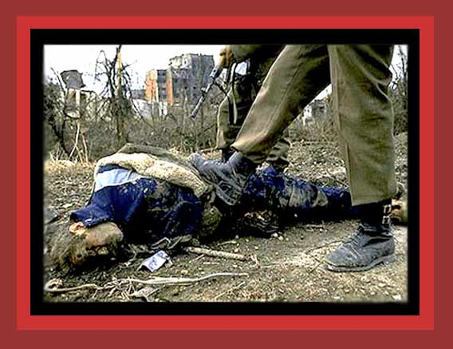

Here Serb irregular militiamen kick the corpse of a Croatian civilian, Vukovar, Croatia, 1991. Photo: Ron Haviv. Source: unknown
Next
photo of those murdered by government
Return
to Photographs of Democide, Room 1
Home